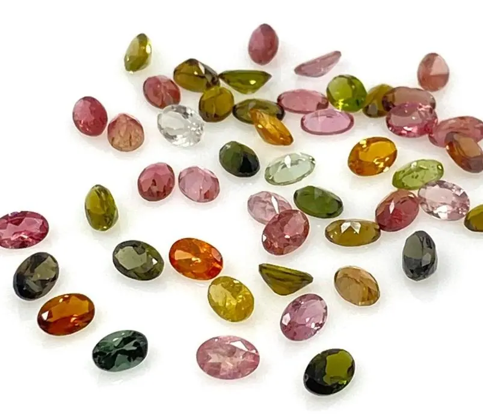
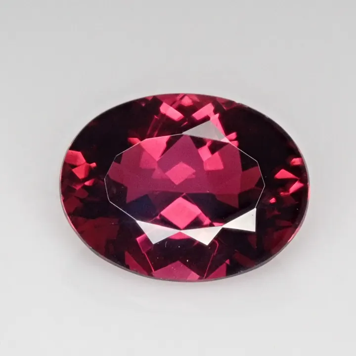

石榴石：被低估的紅色寶石
石榴石的名字來自石榴籽——這個家族有六兄弟，其中兩個（翠榴石、沙弗萊石）正在寶石界大放異彩。


核心定義
石榴石（garnet）是矽酸鹽礦物家族（化學通式 X₃Y₂(SiO₄)₃），因晶體形狀像石榴籽而得名。家族成員按成分分：鎂鋁榴石（Pyrope，紅紫）、鐵鋁榴石（Almandine，紅褐）、錳鋁榴石（Spessartine，橙）、鈣鋁榴石（Grossular，綠黃）、鈣鐵榴石（Andradite，黃綠黑）、鈣鉻榴石（Uvarovite，翠綠）。
石榴石是「被低估的寶石」：常見品（紅色石榴石）親民平價，但家族中的翠榴石（Demantoid，鈣鐵榴石的綠色變種）與沙弗萊石（Tsavorite，綠色鈣鋁榴石）是頂級綠色寶石——尤其翠榴石，稀有度與價格可比肩祖母綠。
特徵與分類
| 品種 | 顏色 | 市場 |
|---|---|---|
| 鎂鋁榴石 | 紅紫 | 常見平價 |
| 鐵鋁榴石 | 紅褐 | 最常見 |
| 錳鋁榴石 | 橙（芬達色） | 高價 |
| 沙弗萊石 | 翠綠 | 高端 |
| 翠榴石 | 翠綠（帶火彩） | 頂級稀有 |
「芬達石榴石」（橙色的錳鋁榴石，像芬達汽水色）近年受年輕市場追捧；沙弗萊石與翠榴石是「綠色寶石新貴」——翠榴石的高色散（火彩超過鑽石）讓它被譽為「祖母綠的對手」。
科學原理
石榴石是「固溶體家族」：鎂鋁與鐵鋁可無限互溶（Pyrope-Almandine 系列）——所以石榴石顏色從紅紫到紅褐連續過渡。折射率 1.71–1.94（家族範圍廣）、比重 3.5–4.3——鑑定靠精確測量。
翠榴石的高火彩：色散（dispersion）高達 0.057（鑽石 0.044）——光線在翠榴石中分解出彩虹般火彩。鑑定特徵：「馬尾狀」石棉包裹體（俄羅斯烏拉爾產）——翠榴石的標誌。
鑑定與鑑別方法
- 測折射率：1.71–1.94（家族廣）
- 看顏色與包裹體：翠榴石馬尾包裹體
- 區分紅寶：石榴石無二色性
- 比重測試
- 實驗室定品種與產地
市場行情與保養建議
行情：紅色石榴石平價（每克拉數十至數百人民幣）、芬達石榴石與沙弗萊石走高（每克拉數百至數千）、翠榴石頂級（每克拉數千至上萬）——同一個家族，價格差百倍。
選購：日常佩戴選紅石榴石（美而平價）；投資收藏看翠榴石與沙弗萊石（稀有＋綠色寶石熱潮）；芬達色適合年輕設計——石榴石家族的「階梯」，從平價到天價。
常見誤區
石榴石家族有綠（翠榴石、沙弗萊）、橙（芬達）、紫、黑等多色——紅色只是最常見的一支。
常見紅石榴石確實平價，但翠榴石是世界上最稀有的寶石之一——「石榴石」三個字，涵蓋從平價到天價的整個光譜。
冷知識
色散 0.057 vs 鑽石 0.044——翠榴石在光下能迸出比鑽石更絢爛的火彩，「綠色鑽石」之名名副其實。
紅色象徵忠誠與友誼——石榴石是冬季的暖色，也是古羅馬印章戒指的常用材料（硬度 6.5–7.5 適合雕刻）。
反直覺觀點
翠榴石（綠）與普通紅石榴石同族不同命——稀有度與火彩讓綠色兄弟身價百倍。家族內部，天差地別。
硬度 6.5–7.5 足夠抵抗日常磨損——古人用它刻印章（蠟封不黏），是「實用性」決定了它的歷史角色。